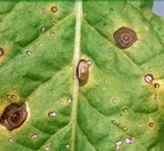

TOBACCO :: MAJOR DISEASE :: FROG EYE SPOT
Frog eye spot - Cercospora nicotianae
Symptoms
The disease appears mostly on mature, lower leaves as small ashy grey spots with brown border. The typical spots have a white centre, surrounded in succession by grey, brown portions with a dark brown to black margin, resembling the eyes of a frog. Under favorable conditions, several spots coalesce to form large necrotic areas, causing the leaf to dry up from the margin and wither prematurely. Both yield and quality are reduced greatly. The disease may occur in the seedlings also, leading to withering of leaves and death of the seedlings.
|  |
Symptoms |
Pathogen
The mycelium is intercellular and collects beneath the epidermis and clusters of conidiophores emerge through stomata. The conidiophores are septate, dark brown at the base and lighter towards the top bearing 2-3 conidia. The conidia are hyaline, slender, slightly curved, thinwalled and 2-12 septate.
Favorable Conditions
- Temperature of 20-30˚C.
- High humidity (80-90 per cent).
- Close spacing, frequent irrigation and excess application of nitrogenous fertilizers.
Disease cycle
The pathogen is seed-borne and also persists on crop residues in the soil. The primary infection is from the seed and soil-borne inoculum. The secondary spread is through wind-borne conidia.
Management
- Remove and burn plant debris in the soil.
- Avoid excess nitrogenous fertilization.
- Adopt optimum spacing.
- Regulate irrigation frequency.
- Spray the crop with 0.4 per cent Bordeaux mixture or Thiophanate Methyl 750g/ha or Carbendazim 750 g/ha and repeat after 15 days.